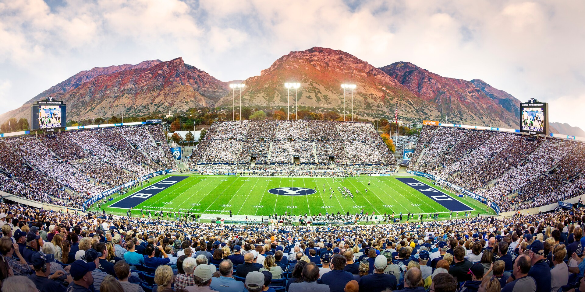

College Football
I enjoy college football for the rivalries, the traditions, and the close games. BYU's stadium is a great place to take it all in.
Watch highlights | Explore the data | Try the gameWhy I Like College Football
- Traditions
- School colors and game-day crowds
- The atmosphere on campus
- Rivalries
- BYU vs. Utah
- Close games and bragging rights
- Strategy
- Play calling and clock management
- A field goal with the game on the line
LaVell Edwards Stadium

LaVell Edwards Stadium in Provo, Utah.
BYU vs. Utah Highlights
College Football Data
Choose a team in this interactive Tableau graph to explore its results.
Try a Field Goal
Choose your aim and power, account for the wind, and see how many kicks you can make.
Play the field-goal game